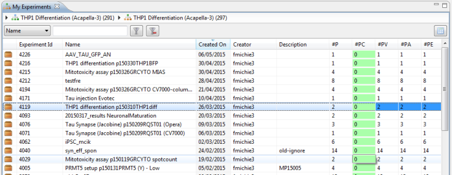
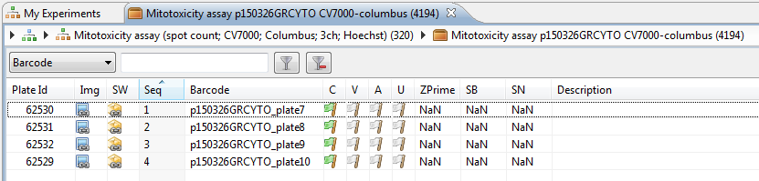
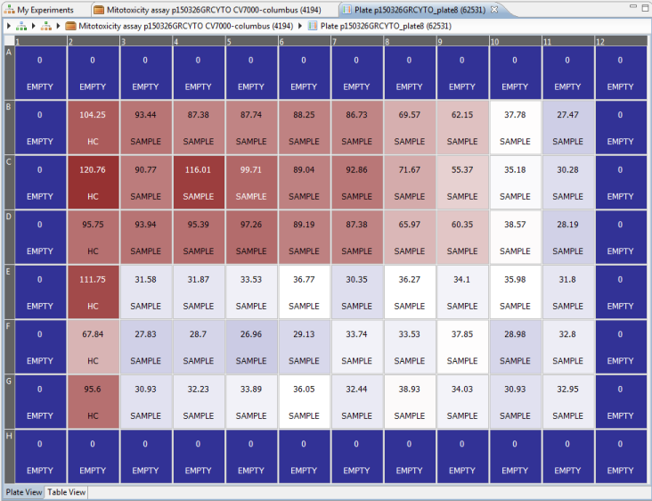
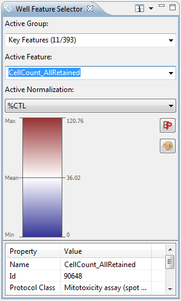

Once you have imported plates in Phaedra, the next thing to do is to open them and look at their contents. This topic explains how to navigate in Phaedra, finding your experiments and plates, and using drill-down navigation to see the amount of detail you want to see.
The starting point for navigation is the Navigator view. This view is open by default, in the top left of the Phaedra workbench.

The Navigator contains several folders. Right now, we want the item My Experiments under My Team. Double-clicking on this item will list all the experiments that you have imported yourself.
If you want to look at a colleague's plates, use Team Experiments instead.

If you double-click on an experiment, its plates will be listed in a new view.
This method of double-clicking on an item to see its contents, is called drill-down navigation, and is a method used frequently in Phaedra.

Note that the previous view, My Experiments, is still listed in the stacked tabs at the top of the view. You can go back to it by clicking on it, or by closing the current view.
To open a plate, double-click on it.

When opening a plate, you will be presented with a heatmap view of the plate, with additional information shown on top of the heatmap.
By default, two labels are shown on each well: the feature value and the well type. The heatmap color also represents the feature value, between blue (the plate's minimum), white (the plate's average) and red (the plate's maximum).
To know which feature is being shown, and to change it, we need to look at the Well Feature Selector view. This view is positioned left, below the Navigator.

The Active Feature is the feature that is being shown in the heatmap. Below it, the feature's Active Normalization is shown, as well as a preview of the coloring method used by the heatmap.
You can freely change these selections at any time; they only affect what's being shown in other views of Phaedra.